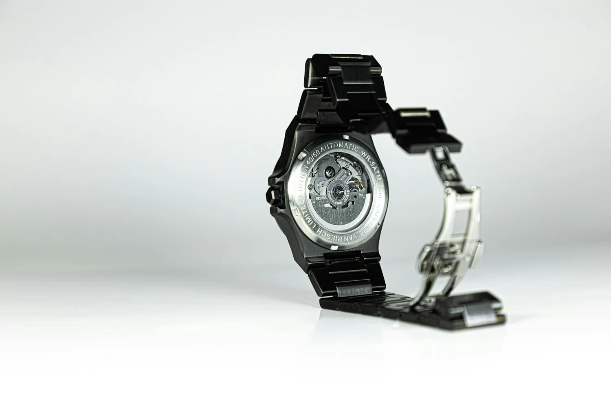

Precision.
With room to breathe.
Tachymeterlily is an independent editorial concept exploring how watches bring together function, proportion and personal expression.

Measured.
Never mechanical.
The tachymeter gives the name its technical edge. Lily brings a quieter appreciation of shape and balance. Together, they describe our approach: understand the mechanism, then leave space for instinct.
This demonstration is built around useful selection questions rather than invented heritage, endorsements or sales promises. We are not a watch manufacturer or an authorised dealer.
Clarity over claims.
We distinguish style observations from technical specifications. The collection is an illustrative study, not available inventory. There are no fabricated reviews, limited-edition counts or claims about performance.
When choosing a real watch, consult the maker’s information, check the seller’s terms and spend time with the watch itself whenever possible.